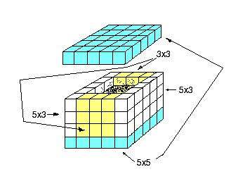
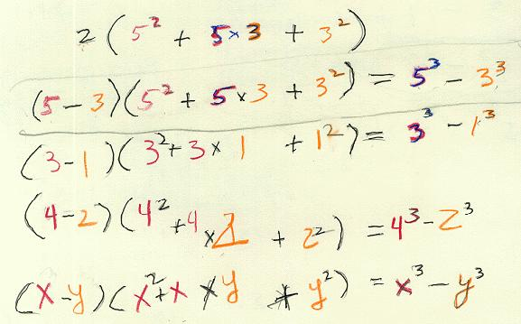
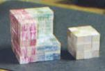

Here is a picture of the wooden 5x5x5 box with the 3x3x3 cube hole that Maggie made with white Cuisenaire rods glued together. Maggie and Don had to sand the 3x3x3 cube so it would fit into the box..a lot of work there!

Don studied the wood pieces and saw, as in the picture above, the number of
cubes in the shell or Maggie's box was:
53-33 =
(5*5*2 + 5*3*2 + 3*3*2), factor out the 2
= 2*(5*5 + 5*3 + 3*3), since 2 = 5-3, we get
53-33 = (5-3)*(52 + 5*3 + 32)
After counting the cubes, Maggie did the same for the 43-23 box that she built. She wrote the last 3 lines below, generalizing:

Don then proceeded to get other students in middle school and high school to use these boxes to find the difference of 2 cubes. Notice that there was a difference of 2 between x and y so far. Then Don asked Michael, an 8th grader, if he could build a box for 53-23. He used the 5x5x5 box and the 2x2x2 cube that Maggie had made, so he just built a corner piece to make up the difference. The shell was an unusual shaped piece. The identity still worked of course.
Fine job, Maggie!
I think this is what makes teaching interesting and
exciting for me- the student does things the teacher has never seen before!

During the Summer of 2001, SarahH made the cubes above, where the 3x3x3 cube comes out of the corner, like IES did in their java applet below.
New! See what IES in Japan has done in making a Java applet to show the difference of two cubes. It's very good and a little different from what Maggie did at http://www.ies.co.jp/math/java/misc/magbox/Magbox1.html
They do such a fine job.